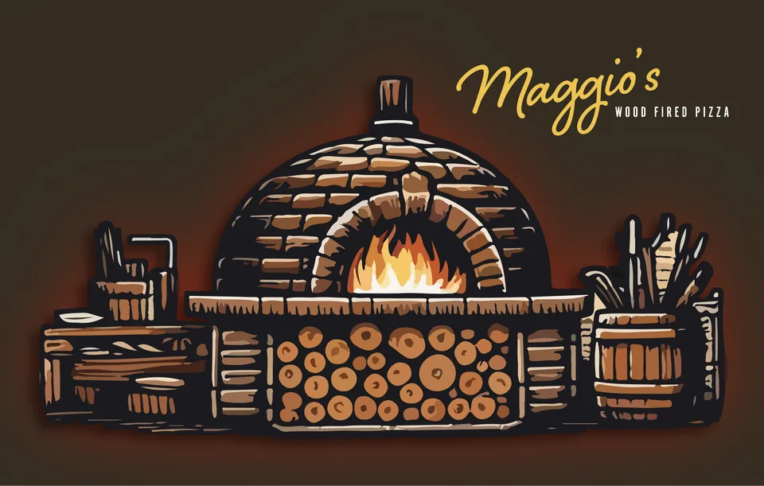
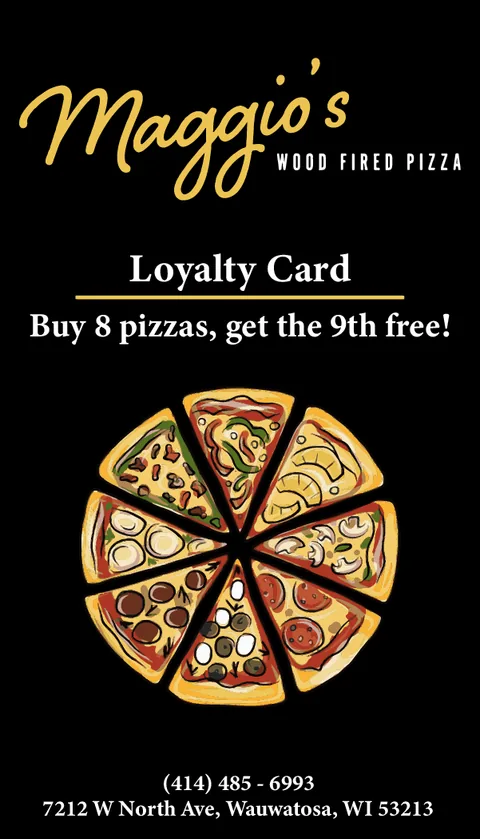
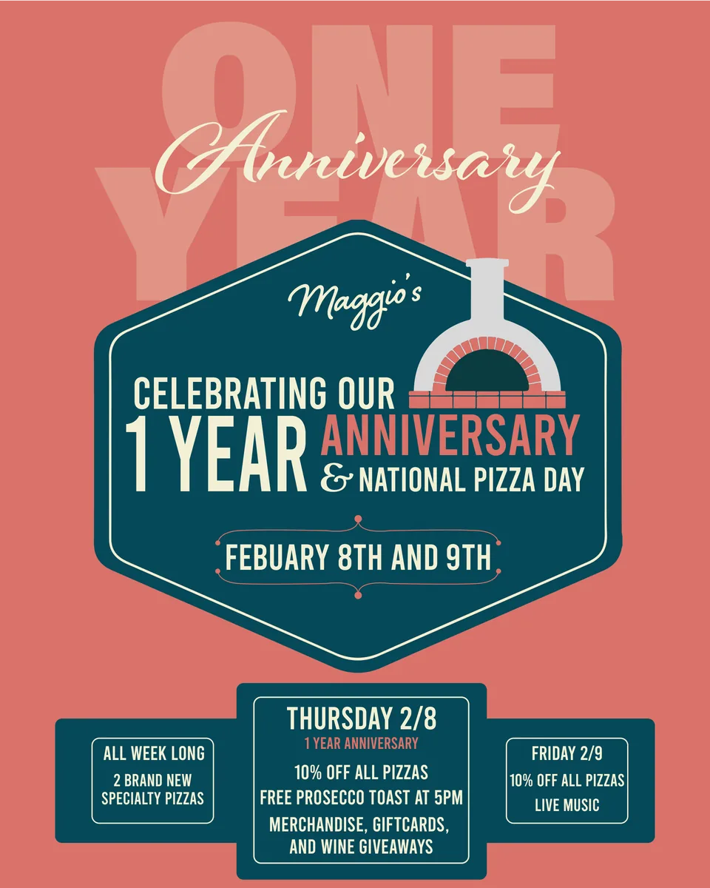

01
2024
Maggio's Wood Fired Pizza
Brand identity · Print · Illustration

A neighbourhood pizzeria in Wauwatosa needed a mark that could carry heat. The identity is built around a hand-drawn wood-fired oven — ochre flame, stacked cordwood, hand-set brick — paired with a warm script wordmark.
The system runs from business cards through a loyalty card to a one-year anniversary poster, held together by a deep teal, coral and cream palette that reads as warm at a distance and detailed up close.


